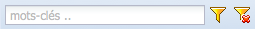
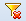

Figure 6 : fonction filtrer.
La fonction filtrer filtre le contenu de la grille principale de l’onglet sélectionné. Le filtrage s’applique sur plusieurs critères, par exemple, la colonne « nom » et la colonne « description » de l’onglet active. Les critères pour filtrer peuvent être personnalisés, pour ce faire, il est nécessaire d’avoir un compte avec les permissions d’admin.
Entrez l’expression de recherche dans le champ texte du menu de fonctions. Les expressions peuvent être en majuscules ou minuscules.
Note
Si le mot contient des accents, écrivez-le tel quel en respectant les accents, sinon, la fonction ne retournera pas des résultats.
Cliquez sur le bouton filtrer du menu.
 Pour supprimer les critères de filtrage et reaficher le contenu complet sur la grille cliquez sur le bouton supprimer filtre.
Présentation de la grille principale
Saisissez un mot clef ou un nom de module, classe ou fonction.